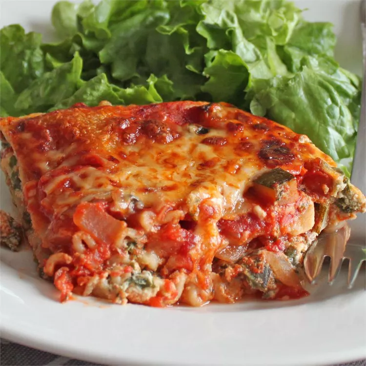

lasagna

Ingredients
- pasta
- tomatoe sauce
- tomatoe
- cheese
- oil
Steps
- Preheat the oven to 375 degrees F (190 degrees C).
- Bring a large pot of lightly salted water to a boil. Cook lasagna noodles in the boiling water, stirring occasionally, until tender yet firm to the bite, about 8 minutes. Drain and rinse with cold water. Toss with 1 tablespoon olive oil to prevent sticking and add flavor.
- Meanwhile, mix 2 cups mozzarella, ricotta, 1/2 cup Parmesan, tofu, and eggs together in a bowl. Combine remaining mozzarella and Parmesan in a smaller bowl.